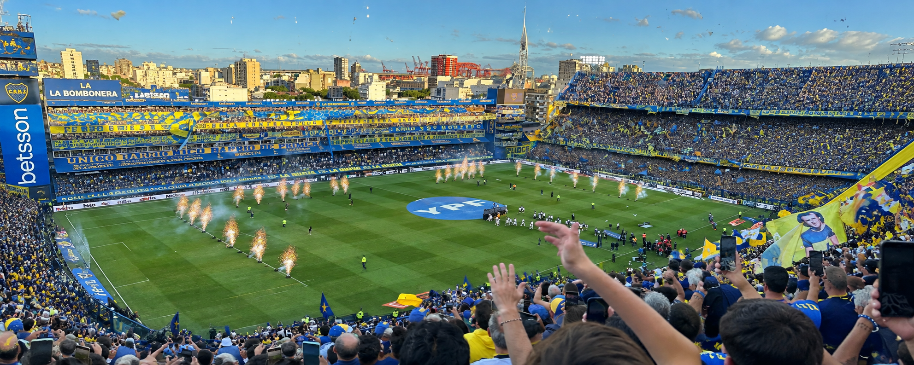
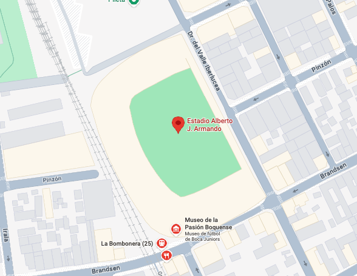
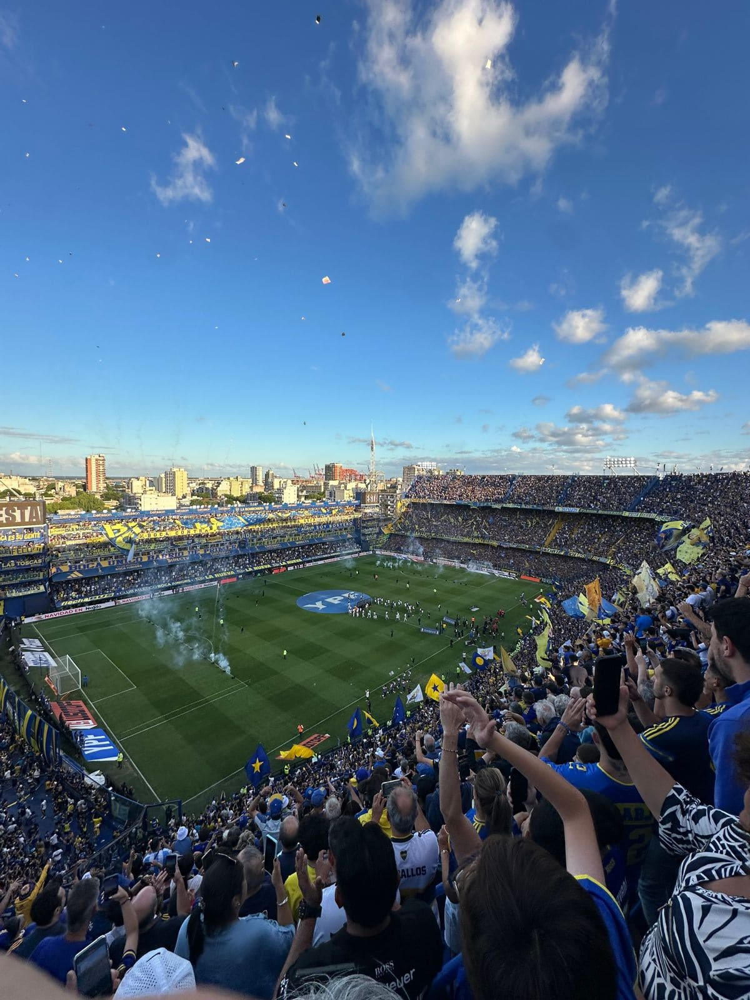
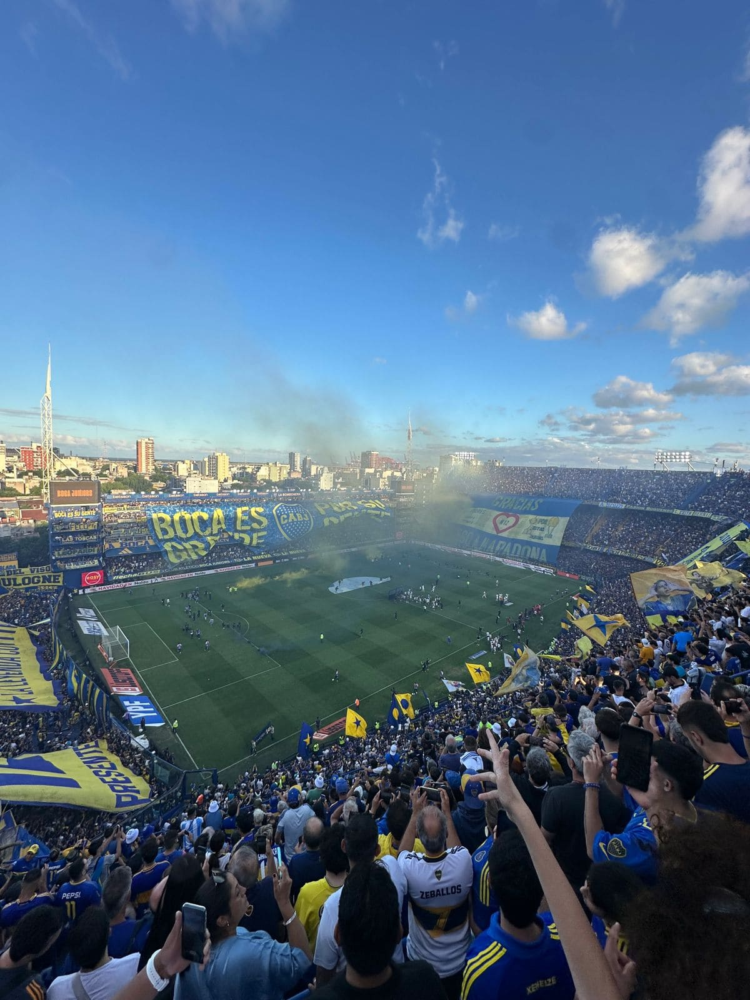
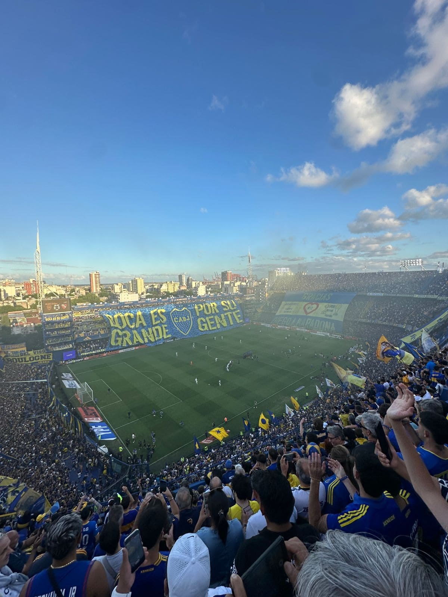

Sobre la mejor cancha de Argentina
La Bombonera es uno de los estadios más emblemáticos del fútbol argentino y un lugar donde la
pasión se siente desde el primer momento. Sus tribunas, sus colores y la cercanía con el campo
de juego generan una experiencia completamente diferente a la de cualquier otro estadio.
Más que una cancha, es un símbolo de identidad para Boca Juniors y para el barrio de La Boca.
Cada rincón está marcado por historias, partidos inolvidables y generaciones de hinchas que
hicieron de este estadio un lugar único. Visitarla y vivir un partido desde sus tribunas permite
entender por qué La Bombonera ocupa un lugar tan especial dentro de la cultura futbolera
argentina.
Contexto de imagenes
Boca 0 — Independiente 0 Una última fecha con la Bombonera a pleno. El 14 de diciembre de 2024, Boca recibió a Independiente en la última fecha del campeonato. El partido terminó 0-0, en una jornada marcada por la expectativa de cerrar el torneo frente a una Bombonera completamente llena. Más allá del resultado, fue una experiencia especial por todo lo que rodeó al partido: las tribunas repletas de azul y amarillo, las banderas, los cantos y la energía de una hinchada que acompañó al equipo durante los 90 minutos. Desde la tribuna, vivir un partido en la Bombonera permite entender por qué este estadio ocupa un lugar tan particular dentro del fútbol argentino. No hace falta un resultado épico para que una cancha deje un recuerdo; a veces, la experiencia está en simplemente haber estado ahí.
Ubicacion Geografica

Galeria de imagenes tomadas



